ml
Deep Learning
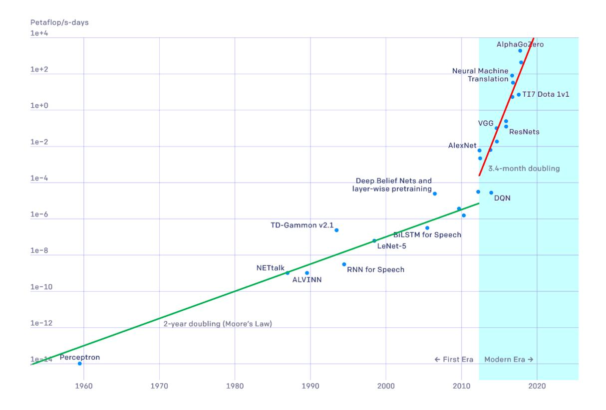
Figure 1.16 Plot of the number of compute cycles, measured in petaflop/s-days, needed to train a state-of-theart neural network as a function of date, showing two distinct phases of exponential growth. [From OpenAI with permission.]
Figure 1.16 illustrates how the number of compute cycles needed to train a state-of-the-art neural network has grown over the years, showing two distinct phases of growth. The vertical axis has an exponential scale and has units of petaflop/s-days, where a petaflop represents $10^{15}$ (a thousand trillion) floating point operations, and a petaflop/s is one petaflop per second. One petaflop/s-day represents computation at the rate of a petaflop/s for a period of 24 hours, which is roughly $10^{20}$ floating point operations, and therefore, the top line of the graph represents an impressive $10^{24}$ floating point operations. A straight line on the graph represents exponential growth, and we see that from the era of the perceptron up to around 2012, the doubling time was around 2 years, which is consistent with the general growth of computing power as a consequence of Moore's law. From 2012 onward, which marks the era of deep learning, we again see exponential growth but the doubling time is now 3.4 months corresponding to a factor of 10 increase in compute power every year!
It is often found that improvements in performance due to innovations in the architecture or incorporation of more sophisticated forms of inductive bias are soon
superseded simply by scaling up the quantity of training data, along with commensurate scaling of the model size and associated compute power used for training (Sutton, 2019). Not only can large models have superior performance on a specific task but they may be capable of solving a broader range of different problems with the same trained neural network. Large language models are a notable example as a single network not only has an extraordinary breadth of capability but is even able to outperform specialist networks designed to solve specific problems.
Section 12.3.5
Section 10.3
Section 9.5
We have seen that depth plays an important role in allowing neural networks to achieve high performance. One way to view the role of the hidden layers in a deep neural network is that of representation learning (Bengio, Courville, and Vincent, 2012) in which the network learns to transform input data into a new representation that is semantically meaningful thereby creating a much easier problem for the final layer or layers to solve. Such internal representations can be repurposed to allow for the solution of related problems through transfer learning, as we saw for skin lesion classification. It is interesting to note that neural networks used to process images may learn internal representations that are remarkably like those observed in the mammalian visual cortex. Large neural networks that can be adapted or fine-tuned to a range of downstream tasks are called foundation models, and can take advantage of large, heterogeneous data sets to create models having broad applicability (Bommasani et al., 2021).
In addition to scaling, there were other developments that helped in the success of deep learning. For example, in simple neural networks, the training signals become weaker as they are backpropagated through successive layers of a deep network. One technique for addressing this is the introduction of residual connections (He et al., 2015a) that facilitate the training of networks having hundreds of layers. Another key development was the introduction of automatic differentiation methods in which the code that performs backpropagation to evaluate error function gradients is generated automatically from the code used to specify the forward propagation. This allows researchers to experiment rapidly with different architectures for a neural network and to combine different architectural elements in multiple ways very easily since only the relatively simple forward propagation functions need to be coded explicitly. Also, much of the research in machine learning has been conducted through open source, allowing researchers to build on the work of others, thereby further accelerating the rate of progress in the field.
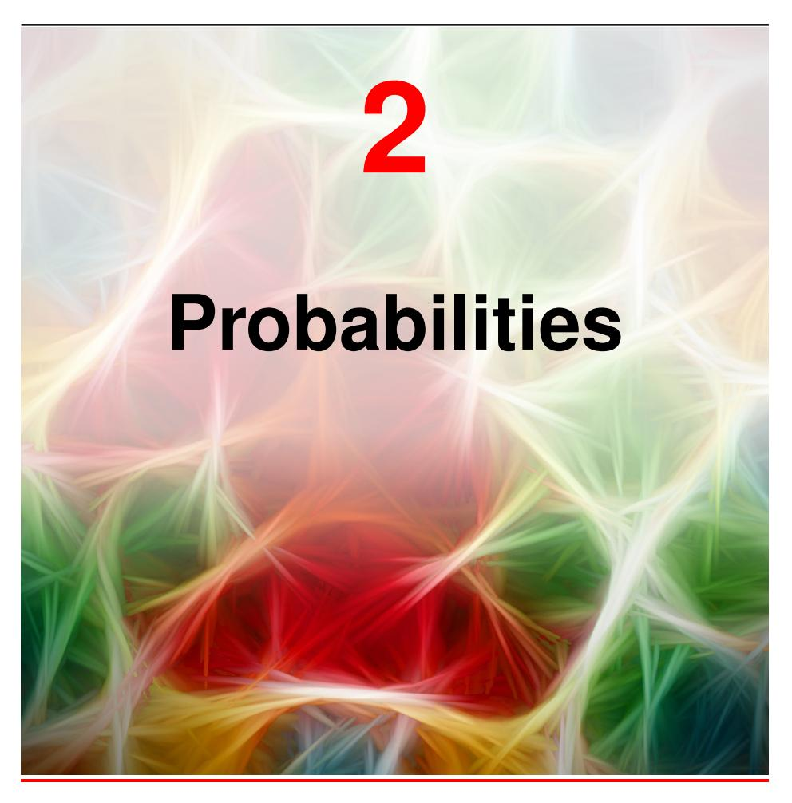
In almost every application of machine learning we have to deal with uncertainty. For example, a system that classifies images of skin lesions as benign or malignant can never in practice achieve perfect accuracy. We can distinguish between two kinds of uncertainty. The first is epistemic uncertainty (derived from the Greek word episteme meaning knowledge), sometimes called systematic uncertainty. It arises because we only get to see data sets of finite size. As we observe more data, for instance more examples of benign and malignant skin lesion images, we are better able to predict the class of a new example. However, even with an infinitely large data set, we would still not be able to achieve perfect accuracy due to the second kind of uncertainty known as aleatoric uncertainty, also called intrinsic or stochastic uncertainty, or sometimes simply called noise. Generally speaking, the noise arises because we are able to observe only partial information about the world, and therefore, one way to reduce this source of uncertainty is to gather different kinds of data. This is illustrated
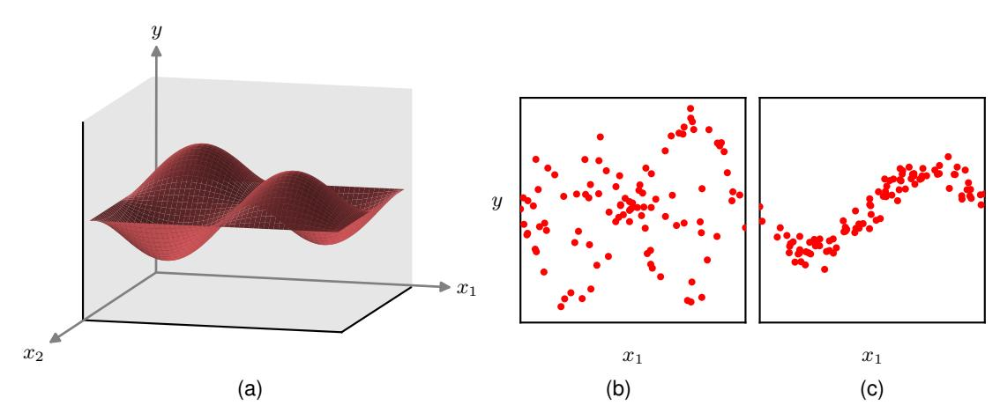
Figure 2.1 An extension of the simple sine curve regression problem to two dimensions. (a) A plot of the function $y(x_1,x_2)=\sin(2\pi x_1)\sin(2\pi x_2)$. Data is generated by selecting values for $x_1$ and $x_2$, computing the corresponding value of $y(x_1,x_2)$, and then adding Gaussian noise. (b) Plot of 100 data points in which $x_2$ is unobserved showing high levels of noise. (c) Plot of 100 data points in which $x_2$ is fixed to the value $x_2=\frac{\pi}{2}$, simulating the effect of being able to measure $x_2$ as well as $x_1$, showing much lower levels of noise.
Section 1.2
using an extension of the sine curve example to two dimensions in Figure 2.1.
As a practical example of this, a biopsy sample of the skin lesion is much more informative than the image alone and might greatly improve the accuracy with which we can determine if a new lesion is malignant. Given both the image and the biopsy data, the intrinsic uncertainty might be very small, and by collecting a large training data set, we may be able to reduce the systematic uncertainty to a low level and thereby make predictions of the class of the lesion with high accuracy.
Both kinds of uncertainty can be handled using the framework of probability theory, which provides a consistent paradigm for the quantification and manipulation of uncertainty and therefore forms one of the central foundations for machine learning. We will see that probabilities are governed by two simple formulae known as the sum rule and the product rule. When coupled with decision theory, these rules allow us, at least in principle, to make optimal predictions given all the information available to us, even though that information may be incomplete or ambiguous.
The concept of probability is often introduced in terms of frequencies of repeatable events. Consider, for example, the bent coin shown in Figure 2.2, and suppose that the shape of the coin is such that if it is flipped a large number of times, it lands concave side up 60% of the time, and therefore lands convex side up 40% of the time. We say that the probability of landing concave side up is 60% or 0.6. Strictly, the probability is defined in the limit of an infinite number of 'trials' or coin flips in this case. Because the coin must land either concave side up or convex side up, these probabilities add to 100% or 1.0. This definition of probability in terms of the frequency of repeatable events is the basis for the frequentist view of statistics.
Now suppose that, although we know that the probability that the coin will land concave side up is 0.6, we are not allowed to look at the coin itself and we do not
Section 2.1 Section 5.2
Figure 2.2 Probability can be viewed either as a frequency associated with a repeatable event or as a quantification of uncertainty. A bent coin can be used to illustrate the difference, as discussed in the text.
60%
40%
know which side is heads and which is tails. If asked to take a bet on whether the coin will land heads or tails when flipped, then symmetry suggests that our bet should be based on the assumption that the probability of seeing heads is 0.5, and indeed a more careful analysis shows that, in the absence of any additional information, this is indeed the rational choice. Here we are using probabilities in a more general sense than simply the frequency of events. Whether the convex side of the coin is heads or tails is not itself a repeatable event, it is simply unknown. The use of probability as a quantification of uncertainty is the Bayesian perspective and is more general in that it includes frequentist probability as a special case. We can learn about which side of the coin is heads if we are given results from a sequence of coin flips by making use of Bayesian reasoning. The more results we observe, the lower our uncertainty as to which side of the coin is which.
Section 2.6
Exercise 2.40
Having introduced the concept of probability informally, we turn now to a more detailed exploration of probabilities and discuss how to use them quantitatively. Concepts developed in the remainder of this chapter will form a core foundation for many of the topics discussed throughout the book.
2.1. The Rules of Probability
In this section we will derive two simple rules that govern the behaviour of probabilities. However, in spite of their apparent simplicity, these rules will prove to be very powerful and widely applicable. We will motivate the rules of probability by first introducing a simple example.
2.1.1 A medical screening example
Consider the problem of screening a population in order to provide early detection of cancer, and let us suppose that 1% of the population actually have cancer. Ideally our test for cancer would give a positive result for anyone who has cancer and a negative result for anyone who does not. However, tests are not perfect, so we will suppose that when the test is given to people who are free of cancer, 3% of them will test positive. These are known as false positives. Similarly, when the test is given to people who do have cancer, 10% of them will test negative. These are called false negatives. The various error rates are illustrated in Figure 2.3.
Given this information, we might ask the following questions: (1) 'If we screen the population, what is the probability that someone will test positive?', (2) 'If some-
Figure 2.3 Illustration of the accuracy of a cancer test. Out of every hundred people taking the test who do not have cancer, shown on the left, on average three will test positive. For those who have cancer, shown on the right, out of every hundred people taking the test, on average 90 will test positive.
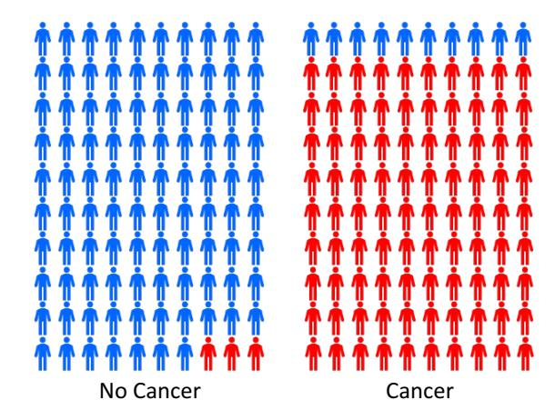
one receives a positive test result, what is the probability that they actually have cancer?'. We could answer such questions by working through the cancer screening case in detail. Instead, however, we will pause our discussion of this specific example and first derive the general rules of probability, known as the sum rule of probability and the product rule. We will then illustrate the use of these rules by answering our two questions.
2.1.2 The sum and product rules
To derive the rules of probability, consider the slightly more general example shown in Figure 2.4 involving two variables X and Y. In our cancer example, X could represent the presence or absence of cancer, and Y could be a variable denoting the outcome of the test. Because the values of these variables can vary from one person to another in a way that is generally unknown, they are called random variables or stochastic variables. We will suppose that X can take any of the values $x_i$ where $i=1,\ldots,L$ and that Y can take the values $y_j$ where $j=1,\ldots,M$. Consider a total of N trials in which we sample both of the variables X and Y, and let the number of such trials in which $X=x_i$ and $Y=y_j$ be $n_{ij}$. Also, let the number of trials in which X takes the value $x_i$ (irrespective of the value that Y takes) be denoted by $x_i$, and similarly let the number of trials in which Y takes the value $y_j$ be denoted by $x_j$.
The probability that X will take the value $x_i$ and Y will take the value $y_j$ is written $p(X = x_i, Y = y_j)$ and is called the joint probability of $X = x_i$ and $Y = y_j$. It is given by the number of points falling in the cell i,j as a fraction of the total number of points, and hence
$$p(X = x_i, Y = y_j) = \frac{n_{ij}}{N}.$$ (2.1)
Here we are implicitly considering the limit $N \to \infty$. Similarly, the probability that X takes the value $x_i$ irrespective of the value of Y is written as $p(X = x_i)$ and is
Figure 2.4 We can derive the sum and product rules of probability by considering a random variable X, which takes the values $\{x_i\}$ where $i=1,\ldots,L$, and a second random variable Y, which takes the values $\{y_j\}$ where $j=1,\ldots,M$. In this illustration, we have L=5 and M=3. If we consider the total number N of instances of these variables, then we denote the number of instances where $X=x_i$ and $Y=y_j$ by $n_{ij}$, which is the number of instances in the corresponding cell of the array. The number of instances in column i, corresponding to $X=x_i$, is denoted by $c_i$, and the number of instances in row j, corresponding to $Y=y_j$, is denoted by $r_j$.
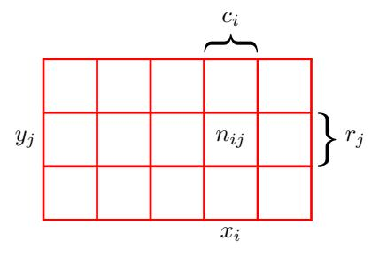
given by the fraction of the total number of points that fall in column i, so that
$$p(X = x_i) = \frac{c_i}{N}. (2.2)$$
Since $\sum_i c_i = N$, we see that
$$\sum_{i=1}^{L} p(X = x_i) = 1 \tag{2.3}$$
and, hence, the probabilities sum to one as required. Because the number of instances in column i in Figure 2.4 is just the sum of the number of instances in each cell of that column, we have $c_i = \sum_j n_{ij}$ and therefore, from (2.1) and (2.2), we have
$$p(X = x_i) = \sum_{j=1}^{M} p(X = x_i, Y = y_j), $$ (2.4)
which is the sum rule of probability. Note that $p(X = x_i)$ is sometimes called the marginal probability and is obtained by marginalizing, or summing out, the other variables (in this case Y).
If we consider only those instances for which $X = x_i$, then the fraction of such instances for which $Y = y_j$ is written $p(Y = y_j | X = x_i)$ and is called the conditional probability of $Y = y_j$ given $X = x_i$. It is obtained by finding the fraction of those points in column i that fall in cell i, j and, hence, is given by
$$p(Y = y_j | X = x_i) = \frac{n_{ij}}{c_i}. (2.5)$$
Summing both sides over j and using $\sum_{j} n_{ij} = c_i$, we obtain
$$\sum_{i=1}^{M} p(Y = y_j | X = x_i) = 1 $$ (2.6)
showing that the conditional probabilities are correctly normalized. From (2.1), (2.2), and (2.5), we can then derive the following relationship:
$$p(X = x_i, Y = y_j) = \frac{n_{ij}}{N} = \frac{n_{ij}}{c_i} \cdot \frac{c_i}{N}$$
= $p(Y = y_j | X = x_i) p(X = x_i),$ (2.7)
which is the product rule of probability.
So far, we have been quite careful to make a distinction between a random variable, such as X, and the values that the random variable can take, for example $x_i$. Thus, the probability that X takes the value $x_i$ is denoted $p(X = x_i)$. Although this helps to avoid ambiguity, it leads to a rather cumbersome notation, and in many cases there will be no need for such pedantry. Instead, we may simply write p(X) to denote a distribution over the random variable X, or $p(x_i)$ to denote the distribution evaluated for the particular value $x_i$, provided that the interpretation is clear from the context.
With this more compact notation, we can write the two fundamental rules of probability theory in the following form:
sum rule $$p(X) = \sum_{Y} p(X, Y)$$ (2.8)
product rule $$p(X,Y) = p(Y|X)p(X).$$ (2.9)
Here p(X,Y) is a joint probability and is verbalized as 'the probability of X and Y'. Similarly, the quantity p(Y|X) is a conditional probability and is verbalized as 'the probability of Y given X'. Finally, the quantity p(X) is a marginal probability and is simply 'the probability of X'. These two simple rules form the basis for all of the probabilistic machinery that we will use throughout this book.
2.1.3 Bayes' theorem
From the product rule, together with the symmetry property p(X,Y) = p(Y,X), we immediately obtain the following relationship between conditional probabilities:
$$p(Y|X) = \frac{p(X|Y)p(Y)}{p(X)},$$ (2.10)
which is called Bayes' theorem and which plays an important role in machine learning. Note how Bayes' theorem relates the conditional distribution p(Y|X) on the left-hand side of the equation, to the 'reversed' conditional distribution p(X|Y) on the right-hand side. Using the sum rule, the denominator in Bayes' theorem can be expressed in terms of the quantities appearing in the numerator:
$$p(X) = \sum_{Y} p(X|Y)p(Y).$$ (2.11)
Thus, we can view the denominator in Bayes' theorem as being the normalization constant required to ensure that the sum over the conditional probability distribution on the left-hand side of (2.10) over all values of Y equals one.
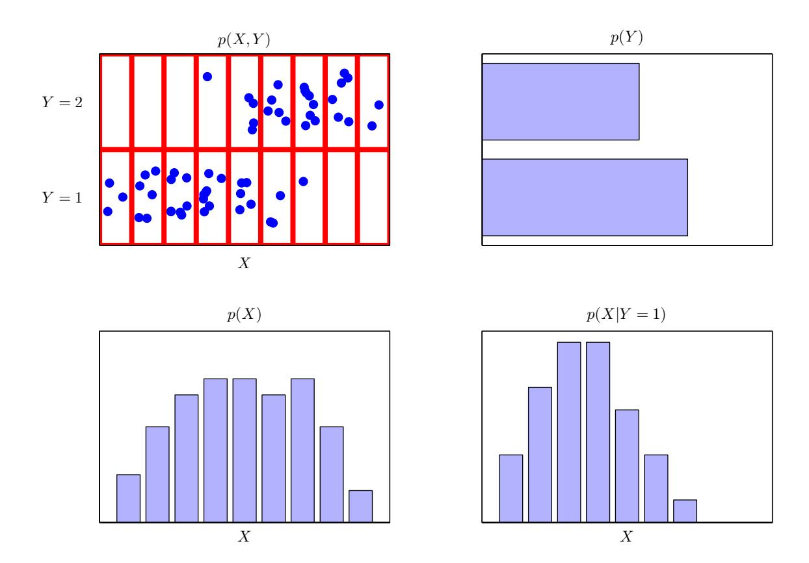
Figure 2.5 An illustration of a distribution over two variables, X, which takes nine possible values, and Y, which takes two possible values. The top left figure shows a sample of 60 points drawn from a joint probability distribution over these variables. The remaining figures show histogram estimates of the marginal distributions p(X) and p(Y), as well as the conditional distribution p(X|Y=1) corresponding to the bottom row in the top left figure.
In Figure 2.5, we show a simple example involving a joint distribution over two variables to illustrate the concept of marginal and conditional distributions. Here a finite sample of N=60 data points has been drawn from the joint distribution and is shown in the top left. In the top right is a histogram of the fractions of data points having each of the two values of Y. From the definition of probability, these fractions would equal the corresponding probabilities p(Y) in the limit when the sample size $N \to \infty$. We can view the histogram as a simple way to model a probability distribution given only a finite number of points drawn from that distribution. The remaining two plots in Figure 2.5 show the corresponding histogram estimates of p(X) and p(X|Y=1).
Section 3.5.1
2.1.4 Medical screening revisited
Let us now return to our cancer screening example and apply the sum and product rules of probability to answer our two questions. For clarity, when working through this example, we will once again be explicit about distinguishing between the random variables and their instantiations. We will denote the presence or absence of cancer by the variable C, which can take two values: C=0 corresponds to 'no cancer' and C=1 corresponds to 'cancer'. We have assumed that one person in a hundred in the population has cancer, and so we have
$$p(C=1) = 1/100 (2.12)$$
$$p(C=0) = 99/100, (2.13)$$
respectively. Note that these satisfy p(C=0) + p(C=1) = 1.
Now let us introduce a second random variable T representing the outcome of a screening test, where T=1 denotes a positive result, indicative of cancer, and T=0 a negative result, indicative of the absence of cancer. As illustrated in Figure 2.3, we know that for those who have cancer the probability of a positive test result is 90%, while for those who do not have cancer the probability of a positive test result is 3%. We can therefore write out all four conditional probabilities:
$$p(T=1|C=1) = 90/100 (2.14)$$
$$p(T=0|C=1) = 10/100 (2.15)$$
$$p(T=1|C=0) = 3/100 (2.16)$$
$$p(T=0|C=0) = 97/100.$$ (2.17)
Again, note that these probabilities are normalized so that
$$p(T=1|C=1) + p(T=0|C=1) = 1 $$ (2.18)
and similarly
$$p(T = 1|C = 0) + p(T = 0|C = 0) = 1.$$ (2.19)
We can now use the sum and product rules of probability to answer our first question and evaluate the overall probability that someone who is tested at random will have a positive test result:
$$p(T=1) = p(T=1|C=0)p(C=0) + p(T=1|C=1)p(C=1)$$ $$= \frac{3}{100} \times \frac{99}{100} + \frac{90}{100} \times \frac{1}{100} = \frac{387}{10,000} = 0.0387. $$ (2.20)
We see that if a person is tested at random there is a roughly 4% chance that the test will be positive even though there is a 1% chance that they actually have cancer. From this it follows, using the sum rule, that p(T=0)=1-387/10,000=9613/10,000=0.9613 and, hence, there is a roughly 96% chance that the do not have cancer.
Now consider our second question, which is the one that is of particular interest to a person being screened: if a test is positive, what is the probability that the person
has cancer? This requires that we evaluate the probability of cancer conditional on the outcome of the test, whereas the probabilities in (2.14) to (2.17) give the probability distribution over the test outcome conditioned on whether the person has cancer. We can solve the problem of reversing the conditional probability by using Bayes' theorem (2.10) to give
$$p(C=1|T=1) = \frac{p(T=1|C=1)p(C=1)}{p(T=1)} $$ (2.21)
$$= \frac{90}{100} \times \frac{1}{100} \times \frac{10,000}{387} = \frac{90}{387} \simeq 0.23 \qquad (2.22)$$
so that if a person is tested at random and the test is positive, there is a 23% probability that they actually have cancer. From the sum rule, it then follows that $p(C=0|T=1)=1-90/387=297/387\simeq0.77$, which is a 77% chance that they do not have cancer.
2.1.5 Prior and posterior probabilities
We can use the cancer screening example to provide an important interpretation of Bayes' theorem as follows. If we had been asked whether someone is likely to have cancer, before they have received a test, then the most complete information we have available is provided by the probability p(C). We call this the prior probability because it is the probability available before we observe the result of the test. Once we are told that this person has received a positive test, we can then use Bayes' theorem to compute the probability p(C|T), which we will call the posterior probability because it is the probability obtained after we have observed the test result T.
In this example, the prior probability of having cancer is 1%. However, once we have observed that the test result is positive, we find that the posterior probability of cancer is now 23%, which is a substantially higher probability of cancer, as we would intuitively expect. We note, however, that a person with a positive test still has only a 23% change of actually having cancer, even though the test appears, from Figure 2.3 to be reasonably 'accurate'. This conclusion seems counter-intuitive to many people. The reason has to do with the low prior probability of having cancer. Although the test provides strong evidence of cancer, this has to be combined with the prior probability using Bayes' theorem to arrive at the correct posterior probability.
2.1.6 Independent variables
Finally, if the joint distribution of two variables factorizes into the product of the marginals, so that p(X,Y)=p(X)p(Y), then X and Y are said to be independent. An example of independent events would be the successive flips of a coin. From the product rule, we see that p(Y|X)=p(Y), and so the conditional distribution of Y given X is indeed independent of the value of X. In our cancer screening example, if the probability of a positive test is independent of whether the person has cancer, then p(T|C)=p(T), which means that from Bayes' theorem (2.10) we have p(C|T)=p(C), and therefore probability of cancer is not changed by observing the test outcome. Of course, such a test would be useless because the outcome of the test tells us nothing about whether the person has cancer.
Figure 2.6 The concept of probability for discrete variables can be extended to that of a probability density p(x) over a continuous variable x and is such that the probability of x lying in the interval $(x, x + \delta x)$ is given by $p(x)\delta x$ for $\delta x \to 0$. The probability density can be expressed as the derivative of a cumulative distribution function P(x).
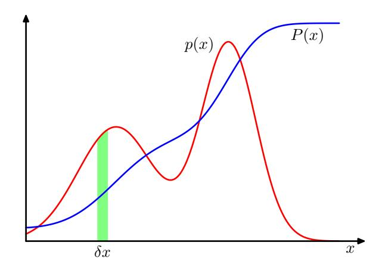
2.2. Probability Densities
As well as considering probabilities defined over discrete sets of values, we also wish to consider probabilities with respect to continuous variables. For instance, we might wish to predict what dose of drug to give to a patient. Since there will be uncertainty in this prediction, we want to quantify this uncertainty and again we can make use of probabilities. However, we cannot simply apply the concepts of probability discussed so far directly, since the probability of observing a specific value for a continuous variable, to infinite precision, will effectively be zero. Instead, we need to introduce the concept of a probability density. Here we will limit ourselves to a relatively informal discussion.
We define the probability density p(x) over a continuous variable x to be such that the probability of x falling in the interval $(x, x + \delta x)$ is given by $p(x)\delta x$ for $\delta x \to 0$. This is illustrated in Figure 2.6. The probability that x will lie in an interval (a,b) is then given by
$$p(x \in (a,b)) = \int_{a}^{b} p(x) dx.$$ (2.23)
Because probabilities are non-negative, and because the value of x must lie somewhere on the real axis, the probability density p(x) must satisfy the two conditions
$$p(x) \geqslant 0 \tag{2.24}$$
$$\int_{-\infty}^{\infty} p(x) \, \mathrm{d}x = 1. \tag{2.25}$$
The probability that x lies in the interval $(-\infty, z)$ is given by the cumulative distribution function defined by
$$P(z) = \int_{-\infty}^{z} p(x) \, \mathrm{d}x, \qquad (2.26)$$
which satisfies P'(x) = p(x), as shown in Figure 2.6.
If we have several continuous variables $x_1, \ldots, x_D$, denoted collectively by the vector $\mathbf{x}$, then we can define a joint probability density $p(\mathbf{x}) = p(x_1, \ldots, x_D)$ such that the probability of $\mathbf{x}$ falling in an infinitesimal volume $\delta \mathbf{x}$ containing the point $\mathbf{x}$ is given by $p(\mathbf{x})\delta \mathbf{x}$. This multivariate probability density must satisfy
$$p(\mathbf{x}) \geqslant 0 \tag{2.27}$$
$$\int p(\mathbf{x}) \, \mathrm{d}\mathbf{x} = 1 \tag{2.28}$$
in which the integral is taken over the whole of x space. More generally, we can also consider joint probability distributions over a combination of discrete and continuous variables.
The sum and product rules of probability, as well as Bayes' theorem, also apply to probability densities as well as to combinations of discrete and continuous variables. If $\mathbf{x}$ and $\mathbf{y}$ are two real variables, then the sum and product rules take the form
sum rule $$p(\mathbf{x}) = \int p(\mathbf{x}, \mathbf{y}) \, d\mathbf{y}$$ (2.29)
product rule $$p(\mathbf{x}, \mathbf{y}) = p(\mathbf{y}|\mathbf{x})p(\mathbf{x}).$$ (2.30)
Similarly, Bayes' theorem can be written in the form
$$p(\mathbf{y}|\mathbf{x}) = \frac{p(\mathbf{x}|\mathbf{y})p(\mathbf{y})}{p(\mathbf{x})}$$ (2.31)
where the denominator is given by
$$p(\mathbf{x}) = \int p(\mathbf{x}|\mathbf{y})p(\mathbf{y}) \,\mathrm{d}\mathbf{y}. \tag{2.32}$$
A formal justification of the sum and product rules for continuous variables requires a branch of mathematics called measure theory (Feller, 1966) and lies outside the scope of this book. Its validity can be seen informally, however, by dividing each real variable into intervals of width $\Delta$ and considering the discrete probability distribution over these intervals. Taking the limit $\Delta \to 0$ then turns sums into integrals and gives the desired result.
2.2.1 Example distributions
There are many forms of probability density that are in widespread use and that are important both in their own right and as building blocks for more complex probabilistic models. The simplest form would be one in which p(x) is a constant, independent of x, but this cannot be normalized because the integral in (2.28) will be divergent. Distributions that cannot be normalized are called improper. We can, however, have the uniform distribution that is constant over a finite region, say (c,d), and zero elsewhere, in which case (2.28) implies
$$p(x) = 1/(d-c), \quad x \in (c,d).$$ (2.33)
Figure 2.7 Plots of a uniform distribution over the range (-1,1), shown in red, the exponential distribution with $\lambda=1$, shown in blue, and a Laplace distribution with $\mu=1$ and $\gamma=1$, shown in green.
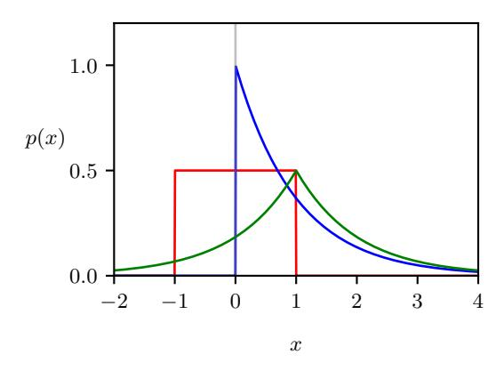
Another simple form of density is the exponential distribution given by
$$p(x|\lambda) = \lambda \exp(-\lambda x), \quad x \geqslant 0.$$ (2.34)
A variant of the exponential distribution, known as the Laplace distribution, allows the peak to be moved to a location $\mu$ and is given by
$$p(x|\mu,\gamma) = \frac{1}{2\gamma} \exp\left(-\frac{|x-\mu|}{\gamma}\right). \tag{2.35}$$
The constant, exponential, and Laplace distributions are illustrated in Figure 2.7. Another important distribution is the Dirac delta function, which is written
$$p(x|\mu) = \delta(x - \mu). \tag{2.36}$$
This is defined to be zero everywhere except at $x = \mu$ and to have the property of integrating to unity according to (2.28). Informally, we can think of this as an infinitely narrow and infinitely tall spike located at $x = \mu$ with the property of having unit area. Finally, if we have a finite set of observations of x given by $\mathcal{D} = \{x_1, \dots, x_N\}$ then we can use the delta function to construct the empirical distribution given by
$$p(x|\mathcal{D}) = \frac{1}{N} \sum_{n=1}^{N} \delta(x - x_n), \qquad (2.37)$$
which consists of a Dirac delta function centred on each of the data points. The probability density defined by (2.37) integrates to one as required.
2.2.2 Expectations and covariances
One of the most important operations involving probabilities is that of finding weighted averages of functions. The weighted average of some function f(x) under a probability distribution p(x) is called the expectation of f(x) and will be denoted by $\mathbb{E}[f]$. For a discrete distribution, it is given by summing over all possible values of x in the form
$$\mathbb{E}[f] = \sum_{x} p(x)f(x) \tag{2.38}$$
where the average is weighted by the relative probabilities of the different values of x. For continuous variables, expectations are expressed in terms of an integration with respect to the corresponding probability density:
$$\mathbb{E}[f] = \int p(x)f(x) \, \mathrm{d}x. \tag{2.39}$$
In either case, if we are given a finite number N of points drawn from the probability distribution or probability density, then the expectation can be approximated as a finite sum over these points:
$$\mathbb{E}[f] \simeq \frac{1}{N} \sum_{n=1}^{N} f(x_n). \tag{2.40}$$
The approximation in (2.40) becomes exact in the limit $N \to \infty$.
Sometimes we will be considering expectations of functions of several variables, in which case we can use a subscript to indicate which variable is being averaged over, so that for instance
$$\mathbb{E}_x[f(x,y)] \tag{2.41}$$
denotes the average of the function f(x, y) with respect to the distribution of x. Note that $\mathbb{E}_x[f(x,y)]$ will be a function of y.
We can also consider a conditional expectation with respect to a conditional distribution, so that
$$\mathbb{E}_x[f|y] = \sum_{x} p(x|y)f(x), \qquad (2.42)$$
which is also a function of y. For continuous variables, the conditional expectation takes the form
$$\mathbb{E}_x[f|y] = \int p(x|y)f(x) \, \mathrm{d}x. \tag{2.43}$$
The variance of f(x) is defined by
$$var[f] = \mathbb{E}\left[ \left( f(x) - \mathbb{E}[f(x)] \right)^2 \right] $$ (2.44)
and provides a measure of how much f(x) varies around its mean value $\mathbb{E}[f(x)]$. Expanding out the square, we see that the variance can also be written in terms of the expectations of f(x) and $f(x)^2$:
$$var[f] = \mathbb{E}[f(x)^2] - \mathbb{E}[f(x)]^2.$$ (2.45)
In particular, we can consider the variance of the variable x itself, which is given by
$$var[x] = \mathbb{E}[x^2] - \mathbb{E}[x]^2. \tag{2.46}$$
For two random variables x and y, the covariance measures the extent to which the two variables vary together and is defined by
$$cov[x, y] = \mathbb{E}_{x,y} \left[ \left\{ x - \mathbb{E}[x] \right\} \left\{ y - \mathbb{E}[y] \right\} \right]$$$$= \mathbb{E}_{x,y} [xy] - \mathbb{E}[x] \mathbb{E}[y]. \tag{2.47}$$
Exercise 2.7
Figure 2.8 Plot of a Gaussian distribution for a single continuous variable x showing the mean $\mu$ and the standard deviation $\sigma$.
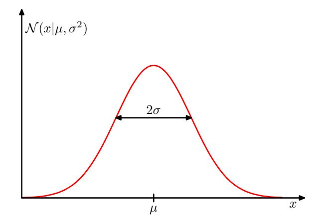
Exercise 2.9 If x and y are independent, then their covariance equals zero. For two vectors $\mathbf{x}$ and $\mathbf{y}$, their covariance is a matrix given by
$$cov[\mathbf{x}, \mathbf{y}] = \mathbb{E}_{\mathbf{x}, \mathbf{y}} [\{\mathbf{x} - \mathbb{E}[\mathbf{x}]\} \{\mathbf{y}^{\mathrm{T}} - \mathbb{E}[\mathbf{y}^{\mathrm{T}}]\}]$$$$= \mathbb{E}_{\mathbf{x}, \mathbf{y}} [\mathbf{x} \mathbf{y}^{\mathrm{T}}] - \mathbb{E}[\mathbf{x}] \mathbb{E}[\mathbf{y}^{\mathrm{T}}]. \tag{2.48}$$
If we consider the covariance of the components of a vector $\mathbf{x}$ with each other, then we use a slightly simpler notation $\operatorname{cov}[\mathbf{x}] \equiv \operatorname{cov}[\mathbf{x}, \mathbf{x}]$.
2.3. The Gaussian Distribution
One of the most important probability distributions for continuous variables is called the normal or Gaussian distribution, and we will make extensive use of this distribution throughout the rest of the book. For a single real-valued variable x, the Gaussian distribution is defined by
$$\mathcal{N}(x|\mu,\sigma^2) = \frac{1}{(2\pi\sigma^2)^{1/2}} \exp\left\{-\frac{1}{2\sigma^2}(x-\mu)^2\right\},$$ (2.49)
which represents a probability density over x governed by two parameters: $\mu$, called the mean, and $\sigma^2$, called the variance. The square root of the variance, given by $\sigma$, is called the standard deviation, and the reciprocal of the variance, written as $\beta = 1/\sigma^2$, is called the precision. We will see the motivation for this terminology shortly. Figure 2.8 shows a plot of the Gaussian distribution. Although the form of the Gaussian distribution might seem arbitrary, we will see later that it arises naturally from the concept of maximum entropy and from the perspective of the central limit theorem.
From (2.49) we see that the Gaussian distribution satisfies
$$\mathcal{N}(x|\mu,\sigma^2) > 0. \tag{2.50}$$
Section 2.5.4 Section 3.2
Exercise 2.12 Also, it is straightforward to show that the Gaussian is normalized, so that
$$\int_{-\infty}^{\infty} \mathcal{N}\left(x|\mu,\sigma^2\right) \, \mathrm{d}x = 1. \tag{2.51}$$
Thus, (2.49) satisfies the two requirements for a valid probability density.
2.3.1 Mean and variance
We can readily find expectations of functions of x under the Gaussian distribution. In particular, the average value of x is given by
$$\mathbb{E}[x] = \int_{-\infty}^{\infty} \mathcal{N}(x|\mu, \sigma^2) x \, \mathrm{d}x = \mu. $$ (2.52)
Because the parameter $\mu$ represents the average value of x under the distribution, it is referred to as the mean. The integral in (2.52) is known as the first-order moment of the distribution because it is the expectation of x raised to the power one. We can similarly evaluate the second-order moment given by
$$\mathbb{E}[x^2] = \int_{-\infty}^{\infty} \mathcal{N}\left(x|\mu, \sigma^2\right) x^2 \, \mathrm{d}x = \mu^2 + \sigma^2. \tag{2.53}$$
From (2.52) and (2.53), it follows that the variance of x is given by
$$var[x] = \mathbb{E}[x^2] - \mathbb{E}[x]^2 = \sigma^2 \tag{2.54}$$
and hence $\sigma^2$ is referred to as the variance parameter. The maximum of a distribution is known as its mode. For a Gaussian, the mode coincides with the mean.
2.3.2 Likelihood function
Suppose that we have a data set of observations represented as a row vector $\mathbf{X} = (x_1, \dots, x_N)$, representing N observations of the scalar variable x. Note that we are using the typeface $\mathbf{X}$ to distinguish this from a single observation of a D-dimensional vector-valued variable, which we represent by a column vector $\mathbf{x} = (x_1, \dots, x_D)^{\mathrm{T}}$. We will suppose that the observations are drawn independently from a Gaussian distribution whose mean $\mu$ and variance $\sigma^2$ are unknown, and we would like to determine these parameters from the data set. The problem of estimating a distribution, given a finite set of observations, is known as density estimation. It should be emphasized that the problem of density estimation is fundamentally illposed, because there are infinitely many probability distributions that could have given rise to the observed finite data set. Indeed, any distribution $p(\mathbf{x})$ that is nonzero at each of the data points $\mathbf{x}_1, \dots, \mathbf{x}_N$ is a potential candidate. Here we constrain the space of distributions to be Gaussians, which leads to a well-defined solution.
Data points that are drawn independently from the same distribution are said to be independent and identically distributed, which is often abbreviated to i.i.d. or IID. We have seen that the joint probability of two independent events is given by the product of the marginal probabilities for each event separately. Because our data
Exercise 2.13
Figure 2.9 Illustration of the likelihood function for the Gaussian distribution shown by the red curve. Here the grey points denote a data set of values $\{x_n\}$, and the likelihood function (2.55) is given by the product of the corresponding values of p(x) denoted by the blue points. Maximizing the likelihood involves adjusting the mean and variance of the Gaussian so as to maximize this product.
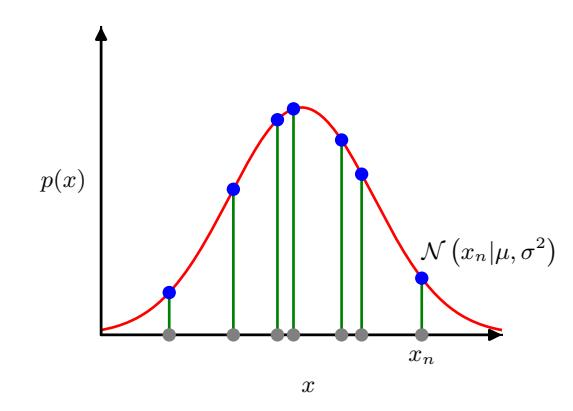
set X is i.i.d., we can therefore write the probability of the data set, given $\mu$ and $\sigma^2$, in the form
$$p(\mathbf{x}|\mu,\sigma^2) = \prod_{n=1}^{N} \mathcal{N}\left(x_n|\mu,\sigma^2\right). \tag{2.55}$$
When viewed as a function of $\mu$ and $\sigma^2$, this is called the likelihood function for the Gaussian and is interpreted diagrammatically in Figure 2.9.
One common approach for determining the parameters in a probability distribution using an observed data set, known as maximum likelihood, is to find the parameter values that maximize the likelihood function. This might appear to be a strange criterion because, from our foregoing discussion of probability theory, it would seem more natural to maximize the probability of the parameters given the data, not the probability of the data given the parameters. In fact, these two criteria are related.
To start with, however, we will determine values for the unknown parameters $\mu$ and $\sigma^2$ in the Gaussian by maximizing the likelihood function (2.55). In practice, it is more convenient to maximize the log of the likelihood function. Because the logarithm is a monotonically increasing function of its argument, maximizing the log of a function is equivalent to maximizing the function itself. Taking the log not only simplifies the subsequent mathematical analysis, but it also helps numerically because the product of a large number of small probabilities can easily underflow the numerical precision of the computer, and this is resolved by computing the sum of the log probabilities instead. From (2.49) and (2.55), the log likelihood function can be written in the form
$$\ln p\left(\mathbf{x}|\mu,\sigma^{2}\right) = -\frac{1}{2\sigma^{2}} \sum_{n=1}^{N} (x_{n} - \mu)^{2} - \frac{N}{2} \ln \sigma^{2} - \frac{N}{2} \ln(2\pi). \tag{2.56}$$
Maximizing (2.56) with respect to $\mu$, we obtain the maximum likelihood solution given by
$$\mu_{\rm ML} = \frac{1}{N} \sum_{n=1}^{N} x_n,\tag{2.57}$$
Section 2.6.2
which is the sample mean, i.e., the mean of the observed values $\{x_n\}$. Similarly, maximizing (2.56) with respect to $\sigma^2$, we obtain the maximum likelihood solution for the variance in the form
$$\sigma_{\rm ML}^2 = \frac{1}{N} \sum_{n=1}^{N} (x_n - \mu_{\rm ML})^2,$$ (2.58)
which is the sample variance measured with respect to the sample mean $\mu_{\rm ML}$. Note that we are performing a joint maximization of (2.56) with respect to $\mu$ and $\sigma^2$, but for a Gaussian distribution, the solution for $\mu$ decouples from that for $\sigma^2$ so that we can first evaluate (2.57) and then subsequently use this result to evaluate (2.58).
2.3.3 Bias of maximum likelihood
The technique of maximum likelihood is widely used in deep learning and forms the foundation for most machine learning algorithms. However, it has some limitations, which we can illustrate using a univariate Gaussian.
We first note that the maximum likelihood solutions $\mu_{\rm ML}$ and $\sigma_{\rm ML}^2$ are functions of the data set values $x_1,\ldots,x_N$. Suppose that each of these values has been generated independently from a Gaussian distribution whose true parameters are $\mu$ and $\sigma^2$. Now consider the expectations of $\mu_{\rm ML}$ and $\sigma_{\rm ML}^2$ with respect to these data set values. It is straightforward to show that
$$\mathbb{E}[\mu_{\mathrm{ML}}] = \mu \tag{2.59}$$
$$\mathbb{E}[\sigma_{\mathrm{ML}}^2] = \left(\frac{N-1}{N}\right)\sigma^2. \tag{2.60}$$
We see that, when averaged over data sets of a given size, the maximum likelihood solution for the mean will equal the true mean. However, the maximum likelihood estimate of the variance will underestimate the true variance by a factor (N-1)/N. This is an example of a phenomenon called bias in which the estimator of a random quantity is systematically different from the true value. The intuition behind this result is given by Figure 2.10.
Note that bias arises because the variance is measured relative to the maximum likelihood estimate of the mean, which itself is tuned to the data. Suppose instead we had access to the true mean $\mu$ and we used this to determine the variance using the estimator
$$\widehat{\sigma}^2 = \frac{1}{N} \sum_{n=1}^{N} (x_n - \mu)^2. $$ (2.61)
Exercise 2.17
Then we find that
$$\mathbb{E}\left[\widehat{\sigma}^2\right] = \sigma^2,\tag{2.62}$$
which is unbiased. Of course, we do not have access to the true mean but only to the observed data values. From the result (2.60) it follows that for a Gaussian distribution, the following estimate for the variance parameter is unbiased:
$$\widetilde{\sigma}^2 = \frac{N}{N-1} \sigma_{\text{ML}}^2 = \frac{1}{N-1} \sum_{n=1}^{N} (x_n - \mu_{\text{ML}})^2.$$ (2.63)
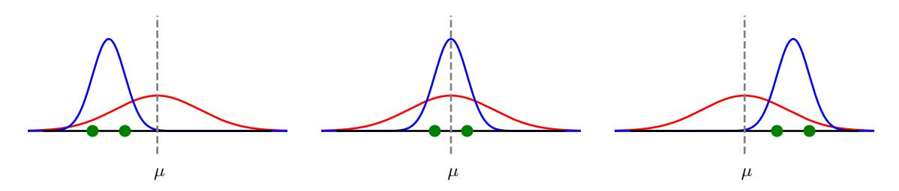
Figure 2.10 Illustration of how bias arises when using maximum likelihood to determine the mean and variance of a Gaussian. The red curves show the true Gaussian distribution from which data is generated, and the three blue curves show the Gaussian distributions obtained by fitting to three data sets, each consisting of two data points shown in green, using the maximum likelihood results (2.57) and (2.58). Averaged across the three data sets, the mean is correct, but the variance is systematically underestimated because it is measured relative to the sample mean and not relative to the true mean.
Correcting for the bias of maximum likelihood in complex models such as neural networks is not so easy, however.
Note that the bias of the maximum likelihood solution becomes less significant as the number N of data points increases. In the limit $N \to \infty$ the maximum likelihood solution for the variance equals the true variance of the distribution that generated the data. In the case of the Gaussian, for anything other than small N, this bias will not prove to be a serious problem. However, throughout this book we will be interested in complex models with many parameters, for which the bias problems associated with maximum likelihood will be much more severe. In fact, the issue of bias in maximum likelihood is closely related to the problem of over-fitting.
Section 2.6.3
2.3.4 Linear regression
We have seen how the problem of linear regression can be expressed in terms of error minimization. Here we return to this example and view it from a probabilistic perspective, thereby gaining some insights into error functions and regularization.
The goal in the regression problem is to be able to make predictions for the target variable t given some new value of the input variable x by using a set of training data comprising N input values $\mathbf{X} = (x_1, \dots, x_N)$ and their corresponding target values $\mathbf{t} = (t_1, \dots, t_N)$. We can express our uncertainty over the value of the target variable using a probability distribution. For this purpose, we will assume that, given the value of x, the corresponding value of t has a Gaussian distribution with a mean equal to the value $y(x, \mathbf{w})$ of the polynomial curve given by (1.1), where $\mathbf{w}$ are the polynomial coefficients, and a variance $\sigma^2$. Thus, we have
$$p(t|x, \mathbf{w}, \sigma^2) = \mathcal{N}\left(t|y(x, \mathbf{w}), \sigma^2\right). \tag{2.64}$$
This is illustrated schematically in Figure 2.11.
We now use the training data $\{\mathbf{x},\mathbf{t}\}$ to determine the values of the unknown parameters $\mathbf{w}$ and $\sigma^2$ by maximum likelihood. If the data is assumed to be drawn